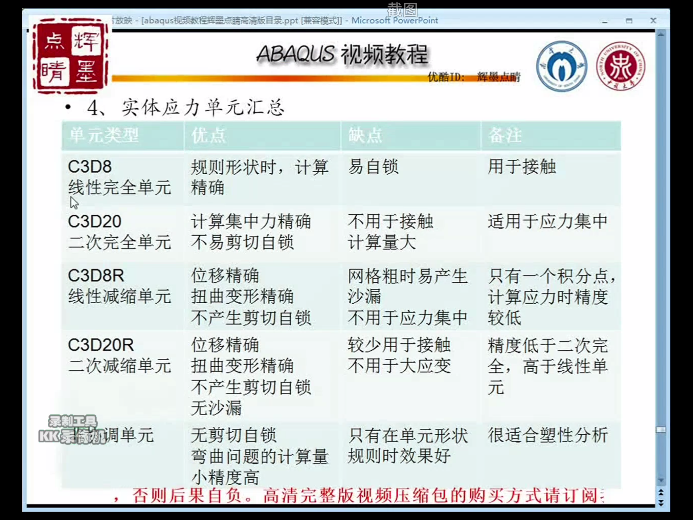

有限元方法
一个将连续体集散化为若干个有限大小的单元体的集合，以求解连续体力学的数值方法
操作基础
abaqus用户界面
复制模型
菜单栏
旋转部件
鼠标操作
平移 ：Ctrl+Alt+MB2
旋转：Ctrl + Alt + MB1
缩放：Ctry + Alt + MB3
软件单位
以SI（m)为单位
长度：M
力：N
质量：千克
时间：秒
压强：pa
能量：焦
密度：kg/m2
加速度：m/s2
建模模块
创建部件
部件的种类
3D ：三维立体模型，默认选项
可变形体：适用于绝大部分的模拟对象
离散刚体：该选项通常用于接触分析中，类似于可变形体，可以模拟任何形状的物体
解析刚体：该选项仅用于建立壳和曲线，不能模拟任何形状的物体，当模拟较为简单的刚体时使用，为接触分析提供刚性表面
欧拉体：用得比较少，不做过多赘述，用在流体分析
2D: 二维平面模型
三维可以解析为二维平面问题，不需要进行三维建模，会大大减少计算时间，代表实体。
可变形
离散刚体
解析刚体
Axisymmetric：轴对称图形
可变形
离散刚性
解析刚性
草图应用
CAD基础命令，画图，延长，裁剪等等
改尺寸，数值
添加草图，保存草图，易复用
aotocad也可以调用进来
实例见example1
拉伸的时候可以一边旋转一边拉伸
旋转扫略
旋转绕轴旋转
扫略按路径扫略
拖拽就是拔模，一边扫一边放大或缩小类似一个台面
放样可以在多个截面进行扫略，少用
创建部件的基本原则
合理简化，不一定要和实际相同
三维模型简化成二维模型，二维模型可以简化为线
添加部件特征
去除材料
在创建切削里面
放样功能：选择拆分面再进行放样
旋转：故名思议
拉伸：这个与之前那个拉伸不同这个会销掉一部分
修复工具的使用
位置在下方四个：
- 转换为解析
- 缝合
- 删除面
- 几何编辑
转换为解析
把外部导入的模型如果规则就把他转化成可以用方程来代表的一个形状转换为精确
通过查询→几何诊断来进行检测无效实体和不精确实体，然后进行转换为精确
缩小间隙：尝试去提高面边顶点的接触方式，不会重新计算模型
重新计算几何：尝试改变相邻的实体的特征，让他们更加精确重新计算模型
先进行缩小间隙，不行在重新计算几何线操作
缝合：从外部导入的模型不连串，但是相互结合，可以采用缝合
修复短边：可以把模型中细小的边进行修复，短边修复，如果有长边会变形不好做
合并边：可以将两条边合并成一条
删除冗余的实体：有多余的线或者无意义的东西都能删除
无效边：通过外部的导入模型出现无效边进行删除
删除线：只能删除单独的边线
删除面：可以删除一个面
模型分割：将一个模型分割成两个，中间会多出来一块板
覆盖边，将封闭线条进行填充
修复面：将面还原，比如分割，拉伸都能还原
修复小面：由于建模过程中有比较小的面可以修复
修复裂片：模型中很细小的长条形状
偏移面：将面偏移出来
延伸面：选择面的一个边进行延伸
融合面：将面进行熔合形成一个曲面查询工具
点 距离 角度等等参数都能查询材料模块
设置材料属性
直接点创建材料，各类属性都会出来创建截面属性
分配截面
可以给壳体和实体分配截面材料
壳体材料分配，棕色的是正面，紫色的是负面创建梁材料的方法
直接创建指派方向
平面方向是梁平面的法线方向
直接指派方向可以进行梁的方向改变
比如竖着的梁可以变成横着的梁装配模块
添加部件
可以将各类部件添加移动部件
添加约束
面平行，面共面，线平行，线共线与坐标系平行
首先要创建坐标系，才能进行坐标系平行布尔操作
合并或者切割实体装配件的显示
视图→装配显示→实例
配色版可以改颜色和透明剖视图
分析步与输出
创建分析步
可以直接点创建分析步，也可以选择分析步管理器创建
时间长度不具有真正的时间效应
最大增量步数：最好1000 或者更大一些，如果结构很复杂步数很小，计算很麻烦场变量输出
用于记录整个模型或者单元集内所有单元在某一时刻的变量值，拍照
作用域：可以选择模型或者一个集。
频率：记录的频率
定时：不用管输出变量
位移 速度 加速度：要记得至少勾画一项历史变量输出
录像
和场变量设置几乎一致
它的频率要进行修改，可以将频率改高一些，否则可能不清楚相互作用
定义接触
先进行属性创建定义约束
耦合约束：被约束的区域与控制点之间建立运动约束关系
需要有一个点进行约束方程约束：1×（ABset各点在2方向上的位移）+（-1）×（RPset在2方向上的位移）=0
这个要先创建集合 工具→集→管理器绑定约束：将两个集合绑定起来不发生位移
刚体约束：将柔性体转变为刚体，用一个点来描述运动
显示体：不参与分析，仅作为显示
定义连接器
基本连接器
理论上用复合连接器
复合连接器用得比较多，各类的约束都能完成MPC连接器
这个用得比较少载荷和边界条件
添加载荷
常见的载荷的添加
创建载荷必须要有分析步和实例
静力有重力，压强，集中力，弯矩解析场的运用
解析场：可以根据函数来进行荷载的控制幅值的运用
添加边界条件
位移转角，对称反对称固定定义预定义场
在模型一开始就有一个运动的初始条件
要选中整个模型，不要只选中某个面定义工况
相同的工作部件在不同的工作环境下的不同情况
在一个模型上进行多种分析，所以要用工况划分网格
基本概念
二维尽量采用四边形，三维尽量采用六面体
单元：连续单元，壳单元，梁单元，桁架单元。
实体单元：C；壳单元：S；梁单元：B；桁架单元：T；刚性单元：R；流体单元：R；声学单元：AC；划分网格及辅助工具
种子尺寸越小，网格越密
最大偏离因子越小，越接近弧度
边种子与全局种子一样
要以绘制结构网格为主
中性轴画法特别适合绘制有对称轴的图形
各类切割方法进行元件的切割
各种分割边的操作
合并面：可以将两个面进行合并
忽略实体命令：可以将同一个面中的线进行分割
虚拟拓扑：忽略一些小物体，可以设置小物体的尺寸。
创建自底向上的网格：如果选择旋转，旋转轴不能鼠标选中，要输入坐标。
独立网格：不依赖于原配件。指定单元类型
线性二次单元：由于是二次在弯矩中会表现得过于刚硬
三次单元：能比较好的进行计算
沙漏模式：网格出现阶梯状，说明出现沙漏模式，可以通过简化网格单元进行解决。
检查与编辑网格
形状检查：
尺寸检查
分析检查：这个最重要，不可以出现error。后处理
提交作业
直接点击提交作业就好了
可以进行监控查看是否有错误
删除选项只会删除管理器里面的目录，但是文件夹里面还会有相关的文件云图显示
各类渲染方式
可以调节变形缩放系数
可以调节动画快慢
可以录制动画
修改文字大小和其他各类参数
绘制箭头图，修改箭头各类参数矢量图显示
XY图表显示
结果→历程输出可以查看各种结果输出
绘图→XY图，之后也可以进行各类参数的修改
在一张图表上绘制多个曲线
绘图时先将要绘制的参数进行另存为，然后选择工具→XY选项→管理器